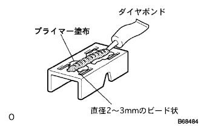

ルーフ ドリップ サイドフィニッシュ モールディング LH 取り付け |
| 1. ルーフ ドリップ サイドフィニッシュ モールディング クリップ NO.1取り付け |
|  |
クリップ取り付け面およびクリップ取り付け位置のボデー側にプライマーを付属のハケにて塗布した後、ただちにダイアボンドを直径2-3mmのビード状にチューブより塗布する。
ダイアボンドを塗布後、ただちにクリップをボデー座面に貼り合わせ、軽くこすり合わせるようにして接着剤とプライマーをなじませた後、クリップを図の位置に取り付け、しっかりと圧着する。
モールディングのはめ込みは、圧着後30分以上経過してから行う。
| 2. ルーフ ドリップ サイドフィニッシュ モールディング LH取り付け |
車両にルーフ ドリップ サイドフィニッシュ モールディングLHを取り付ける。